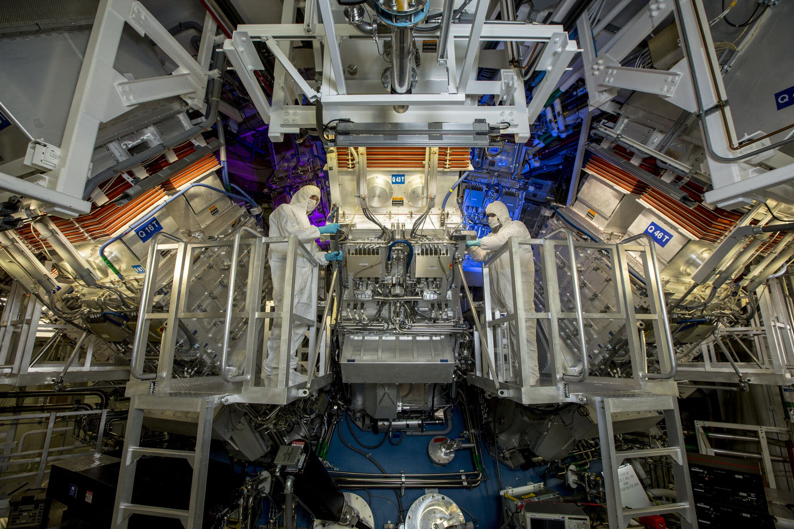

Управляемая термоядерная реакция |
|
|
Во вторник 13 декабря 2022 года учёные, исследующие термоядерный синтез в Ливерморской национальной лаборатории, объявили о достижении долгожданного этапа приручения этого типа энергии. Впервые термоядерная реакция произвела больше энергии, чем было затрачено на её поддержание. На достижение этого потребовалось семь десятилетий. Теоретически внедрение термоядерных реакторов в широком коммерческом масштабе даст нам источник энергии, не загрязняющий окружающую среду, не сжигающий ископаемое топливо и не производящий радиоактивные отходы. Для поддержания термоядерной реакции 5 декабря 2022 года 192 гигантских лазера в Национальном комплексе лазерных термоядерных реакций (National Ignition Facility, NIF) разогрели цилиндрик размером с ластик, в котором в алмазной оболочке содержалось небольшое количество водорода. Одновременно разогрев цилиндр сверху и снизу, лазерные лучи испарили его. Порождённые этим процессом рентгеновские лучи пронизали шарик топлива, состоящего из дейтерия и трития. За время меньшее 100 триллионных долей секунды шарик принял на себя 2,05 МДж энергии и выдал поток нейтронов, порождённых синтезом, унесших с собой 3 МДж энергии – в полтора раза больше, чем было потрачено. В результате был преодолён порог «зажигания», как называют его учёные – когда энергия, произведённая синтезом, превысила энергию запустивших реакцию лазеров. Национальный комплекс лазерных термоядерных реакций начали строить в 1997 году, а запустили в 2009-м, потратив на строительство $3,5 млрд. О первых успехах учёные отчитались в 2014-м, однако производимая тогда реакцией энергия была крохотной – примерно столько потребляет 60-ваттная лампочка за пять минут. Серьёзных цифр удалось достичь только в августе 2021 года, когда реакция произвела 70% от затраченной энергии. На коммерциализацию и широкое распространение данной технологии могут уйти десятилетия – так сказала Кимберли Будил, директор Ливерморской национальной лаборатории. – Думаю, что это будет не 60 и не 50 лет, как принято было говорить раньше. Технология развивается, и при нужных усилиях и соответствующих инвестициях мы через несколько десятилетий исследований сможем построить электростанцию. |
реклама реклама реклама реклама реклама реклама реклама реклама реклама реклама реклама реклама реклама реклама реклама реклама реклама реклама реклама реклама реклама реклама реклама реклама реклама реклама реклама реклама реклама реклама реклама реклама реклама реклама реклама реклама |
| реклама реклама реклама реклама реклама реклама реклама реклама реклама реклама реклама реклама реклама реклама реклама реклама реклама реклама реклама реклама реклама реклама реклама реклама реклама реклама реклама реклама реклама реклама реклама реклама реклама реклама реклама реклама | |
| реклама реклама реклама реклама реклама реклама реклама реклама реклама реклама реклама реклама реклама реклама реклама реклама реклама реклама реклама реклама реклама реклама реклама реклама реклама реклама реклама реклама реклама реклама реклама реклама реклама реклама реклама реклама |
Обратная связьНапишите нам | |
| Хисамутдинова А.М., 2024 |